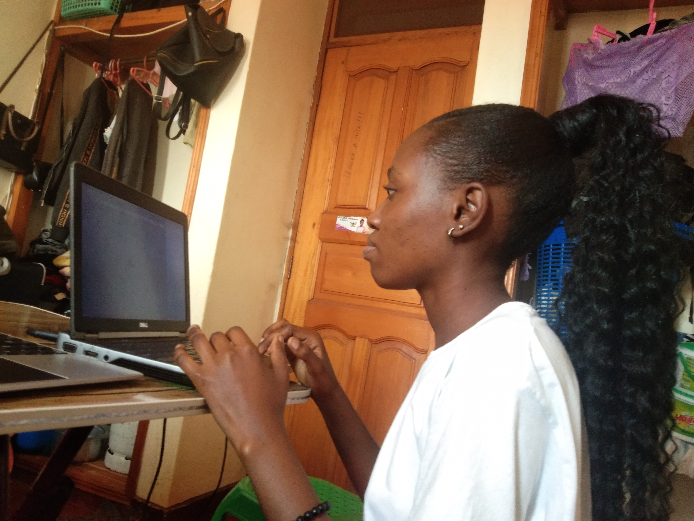

I like reading so much ie i enjoy reading novels, newspapers and alot of literature.I have read novels such as Pride and Prejudice, Alien Woman,The return of Titans and many more. i love reading because it improves on my forcus, memory, empathy, and communication skills.

l really love cooking because it is a skill that is so valuable in our day to day life. It links to improved diet quality

I also like coding. I have interacted with some programming languages such as C Programming language, JAVA
